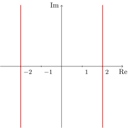

5 Lieux géométriques dans le plan complexe
\[ \newcommand{\R}{\mathbb{R}} \newcommand{\Q}{\mathbb{Q}} \newcommand{\C}{\mathbb{C}} \newcommand{\N}{\mathbb{N}} \newcommand{\Z}{\mathbb{Z}} \newcommand{\zbar}{\overline{z}} \newcommand{\RE}{\textrm{Re}\,} \newcommand{\IM}{\textrm{Im}\,} \newcommand{\Arg}{\textrm{Arg}\,} \newcommand{\iu}{\textrm{i}} \newcommand{\eu}{\textrm{e}} \newcommand{\boitevide}{\square} \]
Définition 5.1: Lieu géométrique
Si \(z\) et \(w\) sont des nombres complexes, alors \(|z-w|\) correspond à la distance entre les points associés à ces nombres.
Généralement, on veut connaître l’ensemble des éléments de \(\C\) qui vérifient une équation donnée. Parfois, il faut aussi interpréter le lieu qui est décrit sous forme d’équation au moyen d’objets géométriques (points, droites, paraboles, etc).
Proposition 5.1: Caractérisation d’un cercle
Soit \(a,b\in\R\) tels que \(w=a+b\,\iu\), et soit \(z\) un nombre complexe de forme cartésienne \(x+y\,\iu\). Nous avons que \[\begin{align*} |z-w|=r&\iff |x+y\iu-(a+b\,\iu)|=r\\ &\iff |(x-a)+(y-b)\iu|=r\\ &\iff \sqrt{(x-a)^2+(y-b)^2}=r\\ &\iff (x-a)^2+(y-b)^2=r^2. \end{align*}\]
On reconnaît que la dernière équation est celle d’un cercle de rayon \(r\) centré en \((a,b)\).
Traduit dans le langage des nombres complexes, cela signifie deux choses,: d’une part les nombres complexes \(z\) satisfaisant \(|z-w|=r\) sont sur le cercle de rayon \(r\) centré en \(w\), d’autre part les nombres complexes sur le cercle de rayon \(r\) centré en \(w\) satisfont \(|z-w|=r\). L’équation \(|z-w|=r\) est une caractérisation du lieu géométrique correspondant au cercle de rayon \(r\) centré en \(w\). La valeur de \(|z-w|\) correspond ainsi à la distance (euclidienne1) entre les points du plan complexe associé aux nombres \(z\) et \(w\).
1 En mathématiques, il existe plusieurs manières de mesurer la distance entre des objets. La distance usuelle entre deux points, appelée aussi distance euclidienne, est celle du segment qui relie les points. On pourrait procéder autrement. Par exemple, pour mesurer la distance entre Québec et Paris (qu’on pourrait modéliser comme étant deux points dans l’espace), il pourrait être approprié de mesurer la longueur de l’arc du grand cercle centré au centre de la Terre reliant ces deux villes plutôt que d’utiliser la longueur du segment qui les relie.
On pourrait distinguer deux approches pour déterminer la nature d’un lieu géométrique caractérisé au moyen d’une équation. D’une part, dans la mesure où les concepts relatifs aux nombres complexes sont connus, de même que certains résultats élémentaires, ces derniers peuvent servir à représenter le lieu associé à une équation donnée. Par exemple, l’équation \(|2z-4\iu|=2\) caractérise les nombres complexes situés sur le cercle de rayon \(1\) centré en \(2\iu\). Cela s’explique au moyen de la proposition 5.1 et des propriétés du module. Nous avons que \[\begin{align*} |2z-4\iu|=2\iff&|2(z-2\iu)|=2\\ \iff& 2|z-2\iu|=2\\ \iff& |z-2\iu|=1. \end{align*}\] D’autre part, on peut aussi choisir d’exprimer \(z\) comme étant un nombre de la forme \(x+\iu\,y,\) où \(x\) et \(y\) sont des nombres réels. Ensuite, en utilisant nos connaissances des concepts relatifs aux nombres complexes, et celles que nous avons des lieux géométriques formés de couples \((x,y)\in\R^2\), l’interprétation est souvent possible. Si on reprend le même exemple, nous avons que \[\begin{align*} |2z-4\iu|=2\iff&|2(x+\iu y)-4\iu|=2\\ \iff& |2x+(2y-4)\iu|=2\\ \iff& \sqrt{4x^2+(2y-4)^2}=2\\ \iff& 4x^2+4(y-2)^2=4\\ \iff& x^2+(y-2)^2=1. \end{align*}\] Dans la mesure où on sait qu’un cercle de rayon \(r\) centré au point \((h,k)\) a pour équation \((x-h)^2+(y-k)^2=r^2\), il devient facile de se représenter le lieu. À l’exemple 5.1, on présente deux approches pour déterminer la nature d’un lieu géométrique caractérisé au moyen des nombres complexes.
Exemple 5.1: Un exemple de lieu géométrique
Il est aussi possible de raisonner uniquement avec le vocabulaire des nombres complexes. En observant que \(|z|^2=z\overline{z}\), nous avons que \[\begin{align*} z^2+2|z|^2+{\overline{z}}^2=16\iff&z^2+2z\overline{z}+{\overline{z}}^2=16\\ \iff& (z+\overline{z})^2=16\\ \iff& z+\overline{z}=\pm 4\\ \iff& \frac{z+\overline{z}}{2}=\pm 2\\ \iff&\RE(z)=\pm 2. \end{align*}\]
Ce lieu géométrique est représenté à la Figure 5.1.

Proposition 5.2: Caractérisation d’une ellipse
La condition \(|w_1-w_2|>2a\) est présente pour éviter d’appeler ellipse l’ensemble vide. En effet, dans le cas où les points \(w_1\) et \(w_2\) sont éloignés d’un distance supérieure à \(2a\), l’inégalité triangulaire exclue la possibilité que \[|z-w_1|+|z-w_2|=2a \text{~pour un certain} z\in \C.\] Pour une raison similaire, la condition \(|w_1-w_2|>2a\) est nécessaire pour que le lieu défini à la proposition 5.3 soit non vide.
Proposition 5.3: Caractérisation d’une hyperbole
Les propositions 5.2 et 5.3 sont des conséquences immédiates des définitions de l’ellipse et de l’hyperbole. En effet, l’ellipse de foyers \(F_1\) et \(F_2\) et de grand axe \(2a\) est le lieu des points \(P\) tels que \(PF_1+PF_2=2a\), tandis que l’hyperbole de foyers \(F_1\) et \(F_2\) et de grand axe \(2a\) est le lieu des points \(P\) tels que \(|PF_1-PF_2|=2a\).